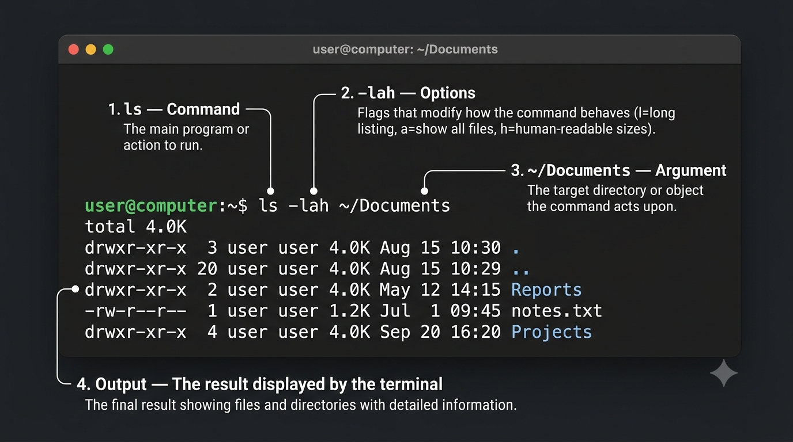
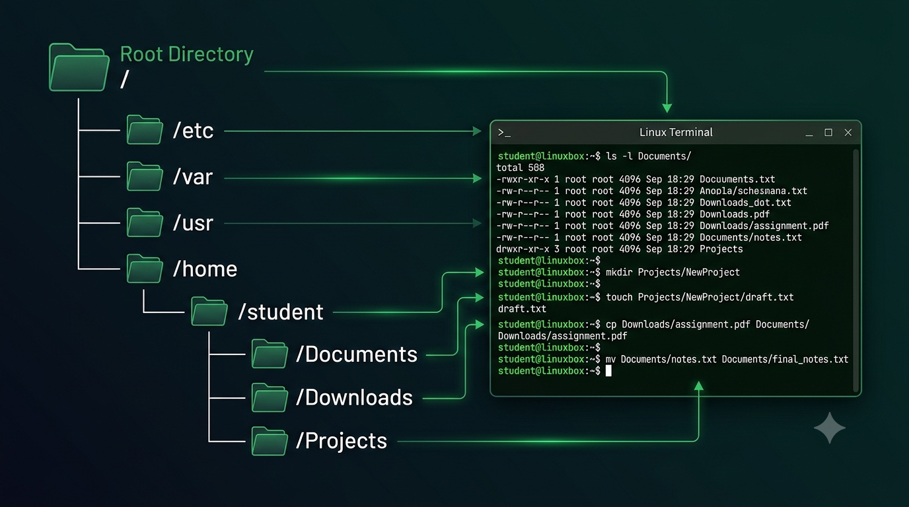
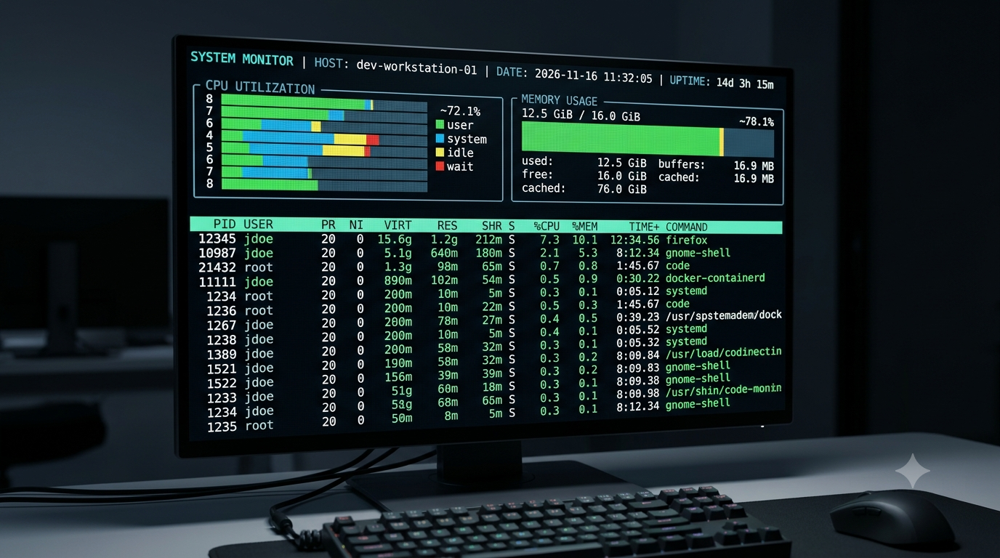
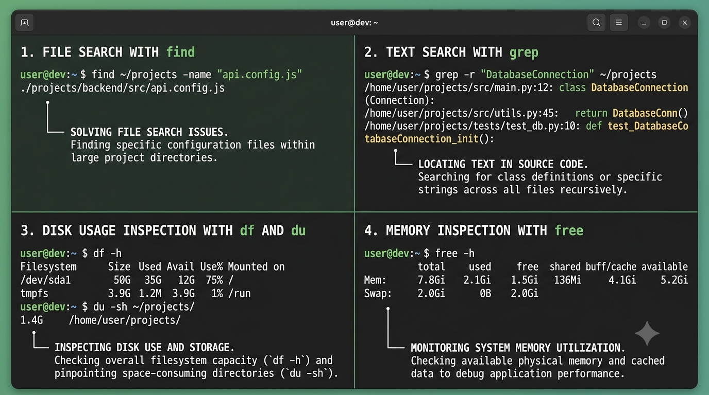

1. Introduction: Why Learn Linux Commands?
Linux commands are text instructions entered into a shell to work with files, directories, programs, devices, networks, and system settings. Instead of navigating every task through graphical menus, you can use a terminal to perform repeatable operations and combine small tools into useful workflows.
For computer science students and developers, command-line knowledge is useful when working with servers, remote machines, Git, development tools, containers, logs, and deployment environments. It also helps you understand what is happening beneath a graphical interface.
This guide is written for beginners. You do not need to memorize all 50 commands at once. Start with navigation and file commands, practise the examples in a safe folder, and return to this page as a reference.
Scope note: Examples target common GNU/Linux systems and a Bash-like shell unless stated otherwise. Some tools are optional packages, some commands are shell built-ins, and package-management commands differ by distribution. Read the notes before copying a command into your own system.
2. Understanding the Linux Terminal
What is a terminal?
A terminal is the text-based interface through which you interact with a command-line program. On a desktop Linux system, open the Terminal application from the applications menu. Common keyboard shortcuts include Ctrl+Alt+T on many Ubuntu desktop setups, although shortcuts can vary by desktop environment.
What is a shell?
A shell reads the commands you type, interprets shell syntax, starts
programs, and connects their input and output. Bash is common on
many Linux systems, but other shells such as Zsh, Fish, and Dash are
also used. Shell built-ins such as cd run inside the
shell itself.

Basic command syntax
command [options] [arguments]-
Command: the program or shell built-in to run,
such as
ls. -
Options: change how the command behaves, such as
-lor--help. - Arguments: the file, directory, user, host, or other value the command operates on.
For example, in ls -lah ~/Documents, ls is
the command, -lah contains options, and
~/Documents is the path argument.
How to execute a command
- Open a terminal window.
- Type a command, including any options and arguments.
- Press Enter to run it.
- Read the output or error message before trying another command.
Use man COMMAND to open a command's manual page when it
is installed, or try COMMAND --help for a shorter usage
summary. Not every program supports the same help options. The shell
usually distinguishes uppercase and lowercase names, and spaces
separate arguments.
Paths, quotes, pipes, and elevated privileges
An absolute path starts from /, such as
/home/student/notes.txt. A relative path is interpreted
from the current directory. Quote paths containing spaces, for
example "My Projects/report.txt". A pipe
(|) sends one command's output to another command's
input. The sudo program runs an authorized command with
elevated privileges; it is not a reason to add administrator access
to every command.
3. Navigation and directory management
Move around the filesystem and create or remove directories.
1. pwd
Syntax: pwd
What it does: Prints the absolute path of the current working directory.
pwdExample explained: Run it when you are unsure which directory your terminal is currently using.
Useful options and notes: No options are needed for the common use. The result is the directory from which relative paths are interpreted.
Permissions and caution: None for ordinary use.
2. ls
Syntax: ls [OPTIONS] [PATH]
What it does: Lists files and directories.
ls -lah ~/DocumentsExample explained: Shows the Documents directory, including hidden entries, with permissions, owner, size, and modification time in a human-readable listing.
Useful options and notes: -l long listing; -a include hidden names; -h human-readable sizes; -R recurse into subdirectories. Exact output varies by implementation and locale.
Permissions and caution: None for ordinary use.
3. cd
Syntax: cd [DIRECTORY]
What it does: Changes the current directory in the running shell. It is normally a shell built-in, not a separate executable.
cd ~/ProjectsExample explained: Moves to the Projects directory under your home directory. `cd ..` moves to the parent; `cd -` returns to the previous directory in Bash and many common shells.
Useful options and notes: `~` means the current user's home directory; `..` is the parent directory; `.` is the current directory. A directory containing spaces should be quoted, for example `cd "My Projects"`.
Permissions and caution: None, but you need execute/search permission on the path components.
4. mkdir
Syntax: mkdir [OPTIONS] DIRECTORY...
What it does: Creates one or more directories.
mkdir -p ~/practice/linux/filesExample explained: Creates the nested directory path. The `-p` option also avoids an error when the parent directories already exist.
Useful options and notes: -p create parent directories as needed; -v print a message for each created directory; -m MODE set initial permissions, subject to the process umask.
Permissions and caution: Requires write permission in the parent directory.
5. rmdir
Syntax: rmdir [OPTIONS] DIRECTORY...
What it does: Removes empty directories. It does not remove directories containing files.
rmdir ~/practice/empty-folderExample explained: Removes the directory only if it is empty. If it contains files or subdirectories, the command fails.
Useful options and notes: -p remove empty parent directories as well; -v report each removal.
Permissions and caution: Destructive but limited to empty directories. Check the path before running it.
4. File and folder operations
Create files, copy or move them, remove them, and create links.

6. touch
Syntax: touch [OPTIONS] FILE...
What it does: Creates an empty file if it does not exist, or updates timestamps on an existing file.
touch notes.txtExample explained: Creates `notes.txt` in the current directory if it is absent. If it already exists, its timestamps are updated; its contents are not erased.
Useful options and notes: -c do not create missing files; -t set a timestamp; -a update access time; -m update modification time.
Permissions and caution: Usually no administrator privileges. The directory must be writable to create a new file.
7. cp
Syntax:
cp [OPTIONS] SOURCE DESTINATION
What it does: Copies files; recursive options are used to copy directories.
cp report.txt ~/Documents/report-backup.txtExample explained: Copies the file to Documents under a new name. The original remains in place.
Useful options and notes: -i prompt before overwriting; -n do not overwrite existing destination files (where supported); -r copy directories recursively; -v show copied paths.
Permissions and caution: Can overwrite destination data. Inspect source and destination carefully; `-i` is useful for interactive work.
8. mv
Syntax:
mv [OPTIONS] SOURCE DESTINATION
What it does: Moves a file or directory, or renames it when source and destination are in the same directory.
mv draft.txt final-report.txtExample explained: Renames `draft.txt` to `final-report.txt` in the current directory.
Useful options and notes: -i prompt before overwriting; -n do not overwrite existing files (implementation-dependent details); -v show the move.
Permissions and caution: May replace an existing destination. Use `-i` and check the destination first.
9. rm
Syntax: rm [OPTIONS] FILE...
What it does: Removes directory entries for files. Directories require a recursive option such as `-r`.
rm -i old-notes.txtExample explained: Asks for confirmation before removing the named file. This is safer for beginners than an unconditional removal.
Useful options and notes: -i prompt before each removal; -r recurse into directories; -f ignore nonexistent files and suppress prompts. Avoid combining `-r` and `-f` casually.
Permissions and caution: Potentially destructive. Removed files may not go to a desktop Trash and may be difficult or impossible to recover. Never paste an unfamiliar `rm` command.
10. ln
Syntax:
ln [OPTIONS] TARGET LINK_NAME
What it does: Creates a link to an existing file or directory. By default it creates a hard link; `-s` creates a symbolic (soft) link.
ln -s /var/log/myapp.log ~/myapp-logExample explained: Creates a symbolic link in the home directory that points to the log file. Opening the link accesses the target.
Useful options and notes: -s symbolic link; -f force replacement of an existing link name (use with care); -v show the link created.
Permissions and caution: Creating a link requires permission in the destination directory. A symbolic link can point to a target that does not currently exist.
5. Viewing and editing files
Read text from the terminal and make simple text-file edits.
11. cat
Syntax: cat [OPTIONS] FILE...
What it does: Writes file contents to standard output. It can also concatenate multiple files.
cat README.mdExample explained: Prints the contents of README.md in the terminal. It is best for short files; large files can scroll past quickly.
Useful options and notes: -n number output lines; -b number non-empty lines; `cat file1 file2` prints both files in sequence.
Permissions and caution: Read-only in this example. Avoid using shell redirection with `cat` unless you understand whether it overwrites a file.
12. less
Syntax: less [OPTIONS] FILE
What it does: Opens a text file in a scrollable pager, without loading the entire display into the terminal at once.
less /var/log/syslogExample explained: Lets you inspect a log file page by page. Use `/word` to search, `n` for the next match, and `q` to quit.
Useful options and notes: -N show line numbers; -S chop long lines rather than wrapping them. Key bindings can vary slightly by pager configuration.
Permissions and caution: Read-only. The `less` program may not be installed on very minimal systems.
13. head
Syntax: head [OPTIONS] FILE...
What it does: Displays the beginning of a file; by default it prints the first 10 lines.
head -n 20 server.logExample explained: Displays the first 20 lines of the log, which is useful for checking headers or the earliest entries in a file.
Useful options and notes: -n N choose the number of lines; -c N choose the number of bytes. Multiple files are labelled in typical GNU implementations.
Permissions and caution: Read-only.
14. tail
Syntax: tail [OPTIONS] FILE...
What it does: Displays the end of a file; by default it prints the last 10 lines.
tail -n 30 server.logExample explained: Shows the most recent 30 lines currently stored in the log.
Useful options and notes: -n N choose the number of lines; -f continue displaying appended data; -F follow a file by name in GNU coreutils.
Permissions and caution: Read-only. `-f` keeps running until interrupted, usually with Ctrl+C.
15. nano
Syntax: nano [OPTIONS] [FILE]
What it does: Opens a simple terminal text editor. It is beginner-friendly but may not be installed by default.
nano notes.txtExample explained: Opens notes.txt for editing, creating it if it does not exist. The shortcut guide appears at the bottom; `Ctrl+O` saves and `Ctrl+X` exits.
Useful options and notes: -l show line numbers; -v view-only mode; `Ctrl+W` search. Shortcut labels use `^` for Ctrl.
Permissions and caution: Saving changes modifies the file. Check the filename before saving, especially when editing configuration files.
6. Searching and filtering
Locate files and process text output using common command-line tools.
16. find
Syntax:
find START_PATH [TESTS] [ACTIONS]
What it does: Searches a directory tree for files and directories matching conditions.
find ~/Projects -type f -name '*.java'Example explained: Searches under Projects for regular files whose names end in `.java`. The quotes keep the shell from expanding the wildcard before find receives it.
Useful options and notes: -type f regular files; -type d directories; -name pattern match names; -iname case-insensitive name match; -mtime N filter by modification age. GNU find has additional options.
Permissions and caution: A search is read-only. Actions such as `-delete` or `-exec rm` can remove data; do not add them unless you fully understand the expression.
17. grep
Syntax:
grep [OPTIONS] PATTERN [FILE...]
What it does: Prints lines that match a text pattern.
grep -in 'error' application.logExample explained: Searches the log without case sensitivity and prints matching line numbers.
Useful options and notes: -i ignore case; -n show line numbers; -r search directories recursively; -v show non-matching lines; -E use extended regular expressions; -F treat the pattern as fixed text.
Permissions and caution: Read-only. Quote patterns containing spaces or shell-special characters. GNU grep and other grep implementations can differ in extended options.
18. sort
Syntax: sort [OPTIONS] [FILE...]
What it does: Sorts lines of text and writes the sorted result to standard output.
sort -n marks.txtExample explained: Sorts numeric values in marks.txt in numeric order. Without `-n`, sorting is generally lexical rather than numeric.
Useful options and notes: -n numeric sort; -r reverse; -u output only one line from each equal sort group; -k choose a sort key; -t set a field separator.
Permissions and caution: Read-only unless output is redirected. `sort file > file` is unsafe because the shell may truncate the input before sort reads it; write to a different output file.
19. uniq
Syntax:
uniq [OPTIONS] [INPUT [OUTPUT]]
What it does: Filters or reports adjacent repeated lines. It usually works best after `sort` when duplicates may be separated.
sort names.txt | uniq -cExample explained: Sorts the names so identical lines are adjacent, then prints each unique line with the number of occurrences.
Useful options and notes: -c prefix lines with counts; -d show repeated lines only; -u show lines that are not repeated. Comparison is line-based.
Permissions and caution: Read-only in this pipeline.
20. wc
Syntax: wc [OPTIONS] [FILE...]
What it does: Counts lines, words, bytes, or characters in input.
wc -l *.javaExample explained: Prints a line count for each Java source file matched by the shell wildcard.
Useful options and notes: -l lines; -w words; -c bytes; -m characters; -L maximum line length in GNU wc.
Permissions and caution: Read-only. Wildcards are expanded by the shell, so the files included depend on the current directory.
7. Permissions and ownership
Inspect user identity and control who can access files.
21. chmod
Syntax: chmod [OPTIONS] MODE FILE...
What it does: Changes file or directory permission bits.
chmod u+x deploy.shExample explained: Adds execute permission for the file owner, allowing that user to run the script if its contents and interpreter are valid.
Useful options and notes: Symbolic modes include `u` user/owner, `g` group, `o` others, and `a` all; `+` adds, `-` removes, and `=` sets. Numeric modes such as 755 are also common. `-R` applies recursively.
Permissions and caution: Can make files inaccessible or expose sensitive files. Avoid broad recursive changes such as `chmod -R 777`; use the narrowest permission change needed.
22. chown
Syntax:
chown [OPTIONS] OWNER[:GROUP] FILE...
What it does: Changes the owner and optionally the group of files or directories.
sudo chown alice:developers project.txtExample explained: Changes the owner to alice and group to developers. The example uses sudo because changing ownership usually requires administrator privileges.
Useful options and notes: -R recursive; -v report changes; `--reference=FILE` copy ownership from another file on GNU chown.
Permissions and caution: Usually requires root or specific capabilities. A wrong recursive path can affect many files; verify the target before using `-R`.
23. chgrp
Syntax:
chgrp [OPTIONS] GROUP FILE...
What it does: Changes the group ownership of files or directories.
chgrp developers shared-notes.txtExample explained: Changes the file's group to developers if the current user is allowed to make that change (often by owning the file and belonging to the target group).
Useful options and notes: -R recursive; -v report changes; `--reference=FILE` copy group ownership on GNU chgrp.
Permissions and caution: May require administrator privileges depending on the file and group. Check the group name and path first.
24. umask
Syntax: umask [OPTION] [MASK]
What it does: Displays or sets the file-creation permission mask for the current shell and its child processes.
umaskExample explained: Displays the current mask. A common value is 022, but the actual value depends on system and user configuration.
Useful options and notes: `umask -S` displays a symbolic form in common shells; `umask 027` sets a mask for the current shell session. New file and directory modes are affected by the mask; it does not change existing files.
Permissions and caution: Setting a mask changes defaults for subsequently created files in that shell/session. It does not require root.
25. id
Syntax: id [OPTIONS] [USER]
What it does: Displays user and group identity information, including numeric IDs.
idExample explained: Shows the current user's UID, primary GID, and supplementary groups. This helps diagnose access and group-membership issues.
Useful options and notes: -u print only the effective user ID; -g print only the effective group ID; -G print supplementary group IDs; -n show names with ID-selection options.
Permissions and caution: Read-only.
8. System information and monitoring
Check the kernel, host, clock, uptime, and memory summary.
26. uname
Syntax: uname [OPTIONS]
What it does: Prints basic information about the running system and kernel.
uname -aExample explained: Prints available system information such as kernel name, host name, kernel release, version, machine hardware name, and operating-system information where supported.
Useful options and notes: -s kernel name; -r kernel release; -m machine hardware name; -a all available fields. Output differs by platform.
Permissions and caution: Read-only.
27. hostnamectl
Syntax:
hostnamectl [OPTIONS] [COMMAND]
What it does: Displays or changes system host-name settings on systems using systemd.
hostnamectlExample explained: Displays the static, transient, and related host-name information where available.
Useful options and notes: `hostnamectl status` displays status explicitly; `hostnamectl set-hostname NAME` changes the system hostname and normally requires administrator privileges.
Permissions and caution: Systemd-specific; not available on every Linux installation. Changing the host name affects system configuration and may require elevated privileges.
28. date
Syntax: date [OPTIONS] [+FORMAT]
What it does: Displays or sets the system date and time.
date '+%Y-%m-%d %H:%M:%S %Z'Example explained: Displays the current date, time, and time-zone abbreviation in a predictable format. The `+` introduces a format string in common implementations.
Useful options and notes: Common format markers: `%Y` year, `%m` month, `%d` day, `%H` hour, `%M` minute, `%S` second, `%Z` time zone. Setting system time generally needs administrator privileges.
Permissions and caution: Displaying the clock is safe. Do not use date-setting options unless you understand the impact on logs, certificates, and scheduled tasks.
29. uptime
Syntax: uptime [OPTIONS]
What it does: Shows how long the system has been running, the number of logged-in users, and load averages.
uptimeExample explained: Provides a quick overview of system uptime and recent load. Load averages are not percentages; interpret them in relation to the number of CPU cores and workload.
Useful options and notes: -p pretty uptime; -s system start time on common procps implementations.
Permissions and caution: Read-only. Output format depends on the implementation.
30. free
Syntax: free [OPTIONS]
What it does: Reports physical memory and swap usage.
free -hExample explained: Displays memory totals and used/available memory in human-readable units. On Linux, the `available` estimate is often more useful than simply subtracting `used` from `total`.
Useful options and notes: -h human-readable; -m megabytes; -g gigabytes; -s N refresh every N seconds; -w separate buffers and cache on procps implementations.
Permissions and caution: Read-only. Usually provided by the procps/procps-ng package.
9. Process management
Inspect running programs and send signals to processes.

31. ps
Syntax: ps [OPTIONS]
What it does: Displays a snapshot of current processes.
ps auxExample explained: Shows processes from all users in a widely used BSD-style format, including process IDs, CPU and memory columns, and command names. The `aux` form is common with procps but is not a universal POSIX spelling.
Useful options and notes: `ps -ef` is another common full-process listing; `ps -u USER` filters by user; `ps -p PID` inspects a specific process. Option styles vary by implementation.
Permissions and caution: Read-only.
32. top
Syntax: top [OPTIONS]
What it does: Displays a live, periodically refreshed view of processes and system resource usage.
topExample explained: Opens an interactive monitor. Press `q` to quit. It can help identify processes using substantial CPU or memory.
Useful options and notes: -u USER filter by user; -p PID monitor selected process IDs; -b batch mode for non-interactive output. Interactive keys depend on implementation.
Permissions and caution: Read-only unless you use interactive controls to send signals or change priorities. Exit with `q`.
33. pgrep
Syntax: pgrep [OPTIONS] PATTERN
What it does: Finds process IDs matching a process name or pattern.
pgrep -a firefoxExample explained: Prints matching process IDs and their full command lines on procps implementations, helping identify the process before acting on it.
Useful options and notes: -a list full command line; -u USER match by effective user; -f match against the full command line; -l list process name with PID.
Permissions and caution: Read-only. A broad pattern can match more processes than intended; inspect the output before using a signal.
34. pkill
Syntax: pkill [OPTIONS] PATTERN
What it does: Sends a signal to processes matching a name or pattern. It is the process-selection counterpart of pgrep.
pkill -TERM -u "$USER" my-test-appExample explained: Requests normal termination of matching instances of my-test-app owned by the current user. Replace the pattern with the exact process name you intend to stop.
Useful options and notes: -TERM send the termination signal; -KILL send an uncatchable kill signal; -u USER restrict by user; -f match full command line. Options depend on procps implementation.
Permissions and caution: Can terminate applications and cause unsaved work to be lost. Prefer the default TERM signal; reserve KILL for an unresponsive process after safer methods fail.
35. kill
Syntax: kill [OPTIONS] PID...
What it does: Sends a signal to one or more process IDs. Despite its name, it can send signals other than termination.
kill -TERM 2480Example explained: Sends the TERM signal to process 2480, asking it to shut down gracefully. Replace 2480 with a PID you have verified using ps or pgrep.
Useful options and notes: `kill -l` lists signal names; `kill -TERM PID` requests termination; `kill -KILL PID` forces termination and should be a last resort. A shell may provide kill as a built-in.
Permissions and caution: May stop a program and lose unsaved work. You may only signal processes you own unless you have elevated privileges.
10. Networking
Inspect network interfaces, test reachability, and connect to remote systems.
36. ip
Syntax: ip [OPTIONS] OBJECT COMMAND
What it does: Inspects and manages network interfaces, addresses, routes, and related networking objects. It is part of the iproute2 suite on common distributions.
ip addr showExample explained: Lists network interfaces and assigned addresses. This is a modern alternative to older `ifconfig` examples.
Useful options and notes: `ip link show` lists links; `ip route show` displays routes; `ip -br addr` gives a brief address summary on supported versions. Changing configuration with `ip` may require root and can disrupt connectivity.
Permissions and caution: Inspection is read-only. Commands such as `ip link set ... down` or `ip addr flush ...` change connectivity and should not be used casually.
37. ping
Syntax: ping [OPTIONS] HOST
What it does: Sends ICMP echo requests to test whether a host responds and to observe round-trip times.
ping -c 4 example.comExample explained: Sends four requests and then exits. A missing response does not prove that a host is offline; firewalls may block ICMP.
Useful options and notes: -c COUNT number of requests; -i INTERVAL interval between requests; -W timeout for a reply on common iputils implementations. Some systems use different options.
Permissions and caution: Usually no administrator privileges on modern systems, but implementation and system policy can differ. Use only against systems you are permitted to test.
38. ss
Syntax: ss [OPTIONS] [FILTER]
What it does: Displays socket information, including listening and established network connections. It is part of iproute2.
ss -tulnExample explained: Lists TCP and UDP sockets listening on local addresses, without resolving service names or host names.
Useful options and notes: -t TCP; -u UDP; -l listening; -n numeric addresses and ports; -p show associated processes where permissions allow; -a all sockets.
Permissions and caution: Read-only. Process details may be restricted for ordinary users.
39. curl
Syntax: curl [OPTIONS] URL
What it does: Transfers data to or from a URL and supports many protocols. It is commonly used to test HTTP endpoints and download resources.
curl -I https://example.comExample explained: Sends an HTTP request asking for response headers, which is useful for checking a web server response without downloading the full page body.
Useful options and notes: -I fetch headers only for HTTP; -L follow redirects; -o FILE save output to a file; -O save using the remote filename; -s silent mode. HTTPS certificate checks are enabled by default.
Permissions and caution: Downloading a file is generally safe, but executing downloaded scripts is not. Do not use `-k` to bypass TLS certificate checks unless you understand the risk.
40. ssh
Syntax: ssh [OPTIONS] USER@HOST
What it does: Opens an encrypted remote shell session using the Secure Shell protocol.
ssh student@server.example.comExample explained: Attempts to connect to the host as user `student`. The host name and account must be replaced with details supplied by the server administrator.
Useful options and notes: -p PORT choose a port; -i FILE select a private-key identity file; -v show connection diagnostics; `ssh-keygen` creates keys but is a separate command.
Permissions and caution: Remote login requires authorization and a reachable SSH server. Verify host keys and never share private keys or passwords.
11. Package management
Install and update software using the package manager for your distribution.
41. apt
Syntax: sudo apt [COMMAND] [PACKAGE]
What it does: Manages packages on Debian-based distributions such as Ubuntu and Debian. APT resolves package dependencies using configured repositories.
sudo apt update && sudo apt install curlExample explained: Refreshes repository package indexes, then installs curl. The `&&` means the install runs only if the update command succeeds.
Useful options and notes: `apt update` refreshes indexes; `apt upgrade` upgrades installed packages; `apt install NAME` installs; `apt remove NAME` removes a package but generally keeps configuration files. `apt` is intended for interactive use; scripts commonly use apt-get.
Permissions and caution: Installing, removing, or upgrading system packages requires administrator privileges. Read the proposed changes before confirming.
42. dnf
Syntax: sudo dnf [COMMAND] [PACKAGE]
What it does: Manages RPM packages on Fedora and other distributions that use DNF.
sudo dnf install curlExample explained: Installs the curl package and resolves dependencies from enabled repositories.
Useful options and notes: `dnf check-update` checks for available updates; `dnf upgrade` applies updates; `dnf remove NAME` removes a package. Exact subcommands and defaults can vary by DNF version and distribution.
Permissions and caution: Requires administrator privileges for system-wide changes. Review the transaction summary before confirming.
43. pacman
Syntax:
sudo pacman [OPTIONS] [PACKAGE]
What it does: Manages packages on Arch Linux and Arch-based distributions.
sudo pacman -SyuExample explained: Synchronizes package databases and performs a full system upgrade. Arch users should avoid partial upgrades.
Useful options and notes: -S package operations; -Syu synchronize databases and upgrade the system; -Ss search repositories; -R remove a package. Do not use `pacman -Sy package` as a routine install pattern because partial upgrades are unsupported.
Permissions and caution: Requires administrator privileges. Read package prompts carefully and follow Arch's full-upgrade model.
44. zypper
Syntax:
sudo zypper [COMMAND] [PACKAGE]
What it does: Manages packages on SUSE Linux Enterprise and openSUSE systems.
sudo zypper install curlExample explained: Installs curl from configured repositories and resolves dependencies.
Useful options and notes: `zypper refresh` refreshes repository metadata; `zypper update` updates installed packages; `zypper remove NAME` removes a package. Options and behavior may differ between versions.
Permissions and caution: Requires administrator privileges for system-wide changes. Review the packages to be installed or removed before confirming.
45. dpkg
Syntax:
dpkg [OPTIONS] PACKAGE_FILE or PACKAGE
What it does: Low-level Debian package tool for installing, inspecting, and removing local `.deb` packages. It does not automatically resolve and download dependencies like APT.
dpkg -l | grep '^ii'Example explained: Lists package database entries and filters for lines whose status begins with `ii`, commonly indicating packages installed and configured.
Useful options and notes: `dpkg -L PACKAGE` lists files installed by a package; `dpkg -S PATH` searches which installed package owns a path; `sudo dpkg -i FILE.deb` installs a local package but may leave dependencies unresolved.
Permissions and caution: Installing or removing packages requires administrator privileges. Prefer APT for normal repository-based installs because it handles dependency resolution.
12. Storage and disk management
Check filesystem capacity and inspect or mount storage devices.
46. df
Syntax: df [OPTIONS] [FILE...]
What it does: Reports available and used space on mounted filesystems.
df -hExample explained: Displays filesystem sizes and free space in human-readable units. It reports filesystem capacity, not the size of one chosen folder.
Useful options and notes: -h human-readable; -T show filesystem type on GNU df; -i show inode usage; `df -h /home` reports the filesystem containing /home.
Permissions and caution: Read-only.
47. du
Syntax:
du [OPTIONS] [FILE or DIRECTORY...]
What it does: Estimates space used by files and directories.
du -sh ~/DownloadsExample explained: Displays one summarized, human-readable total for the Downloads directory.
Useful options and notes: -s summary only; -h human-readable; -a include files as well as directories; -d N limit depth in GNU du. Results can differ from `df` because of filesystem allocation, links, and deleted-but-open files.
Permissions and caution: Read-only. Scanning large directory trees can take time.
48. lsblk
Syntax: lsblk [OPTIONS] [DEVICE...]
What it does: Lists block devices such as disks, partitions, and their mount points. It is commonly supplied by util-linux.
lsblk -fExample explained: Shows filesystem information, labels, UUIDs, and mount points for detected block devices where available.
Useful options and notes: -f filesystem details; -o choose output columns; -p show full device paths; `lsblk -o NAME,SIZE,TYPE,MOUNTPOINTS` displays selected columns on current util-linux versions.
Permissions and caution: Read-only. Use this to identify a device before mounting or formatting; never guess a device name.
49. mount
Syntax:
mount [OPTIONS] DEVICE DIRECTORY
What it does: Attaches a filesystem to a directory called a mount point so its contents become accessible there.
sudo mount /dev/sdb1 /mnt/usbExample explained: Attempts to mount the partition /dev/sdb1 at /mnt/usb. The device must exist, the directory must exist, and the filesystem must be supported.
Useful options and notes: `mount` with no arguments lists mounted filesystems on common systems; -t TYPE specifies a filesystem type when needed; `findmnt` is often a convenient inspection tool but is a separate command.
Permissions and caution: Mounting normally requires administrator privileges. Verify the device with `lsblk -f` and ensure the target directory is correct. Do not use an example device path blindly.
50. umount
Syntax:
umount [OPTIONS] DEVICE or MOUNT_POINT
What it does: Detaches a mounted filesystem from the directory tree. The command is spelled `umount`, without the second n.
sudo umount /mnt/usbExample explained: Unmounts the filesystem mounted at /mnt/usb. Close files and terminals using that mount point first.
Useful options and notes: `umount -l` performs a lazy unmount on Linux; it is not a routine fix for a busy device. `umount -f` is filesystem- and situation-dependent and should not be used casually.
Permissions and caution: Usually requires administrator privileges. Do not unplug removable storage until unmounting succeeds; pending writes may otherwise be lost.
13. Practical Linux Command Examples
Real tasks often require more than one command. The following examples combine the tools above. Run them in a terminal and replace sample paths or names with values from your own system.

1. Find a Java source file by name
find ~/Projects -type f -name '*.java' -print
find starts at the Projects directory, limits results
to regular files, matches names ending in .java, and
prints each match. If the directory does not exist, use the correct
starting path.
2. Check available disk space
df -h
Shows capacity and available space for mounted filesystems. To check
the filesystem containing your home directory, use
df -h "$HOME".
3. Find a running process
pgrep -a firefox
ps -p 2480 -o pid,ppid,stat,cmdThe first command searches for Firefox processes. The second inspects PID 2480 as an example; replace it with a PID returned on your system. Always confirm the process before sending it a signal.
4. Check memory usage
free -hShows RAM and swap information in readable units. Look at the available-memory estimate as well as used memory; Linux uses otherwise-free RAM for caches.
5. Search for an error in log files
grep -in 'error' ~/app-logs/*.logSearches matching log files without case sensitivity and includes line numbers. If the wildcard matches no files, the shell may pass the unmatched pattern through or report an error depending on the shell.
6. Identify network addresses and listening ports
ip addr show
ss -tulnThe first command lists network interfaces and assigned addresses. The second lists listening TCP and UDP sockets with numeric addresses and ports. These commands inspect state; they do not change network settings.
7. Add execute permission to your own script
chmod u+x ./backup.sh
ls -l ./backup.shThe first command adds execute permission for the file owner. The second lets you verify the permission bits. Only do this for a script you trust and have reviewed.
8. Count lines in source files
wc -l src/*.java
Counts lines in Java files in the src directory. The shell expands
the wildcard before running wc.
14. Linux Commands Beginners Should Use Carefully
Linux gives users powerful control over files and the operating system. That power also means a short command can remove data or interrupt a service. Pause before using commands that modify many files, change ownership, manage packages, or affect mounted storage.
-
rm: removes directory entries. Recursive removal can delete entire directory trees. Check the path withpwdandls; userm -ifor interactive confirmation. -
chmod -Randchown -R: recursively change permissions or ownership. A wrong path can affect a large part of a project or system. Avoid blanket permissions such as 777. -
mvandcp: may overwrite a destination. Use interactive options and inspect the target before proceeding. -
kill,pkill, andtopcontrols: can stop programs. Prefer a graceful TERM signal and verify the target process first. -
sudo: gives a command elevated authority. Use it only when the task requires it and you understand what the command will change. -
mountandumount: affect access to storage. Identify devices withlsblk -f, close files using the mount, and wait for unmount to succeed before disconnecting removable media. - Package managers: can install, remove, or upgrade system software. Read the transaction summary. On Arch Linux, avoid partial upgrades; use the documented full system upgrade workflow.
-
curldownloads: downloading a script is not the same as verifying it. Do not pipe an unfamiliar download directly into a shell or run it with sudo.
Beginner rule: do not execute a command simply because it appeared in a tutorial or forum. Understand its target, options, and effects first. Test unfamiliar commands on disposable sample files or a virtual machine.
15. Common Linux Command Mistakes
Using the wrong path
Commands operate on paths relative to the current directory unless
you provide an absolute path. Run pwd and
ls to check where you are before changing or deleting
files.
Confusing permission errors with missing files
Permission denied means the current user lacks a
required permission or access is blocked by another system policy.
Check ownership and permissions with ls -l and identity
with id. Do not automatically solve every permission
problem with sudo or chmod 777.
Assuming every command is installed
Some tools, including nano, curl, and
tree, may not be installed in minimal environments.
Check the error message and use your distribution's package manager
if installation is appropriate.
Using options from a different implementation
Linux distributions may ship GNU, BusyBox, or other implementations
of familiar utilities. Check man COMMAND or
COMMAND --help on your own system instead of assuming
every option is universal.
Forgetting spaces and quoting paths
cd My Projects is interpreted as multiple arguments.
Use cd "My Projects". Quotes also protect wildcard
characters from being expanded too early when a command needs to
receive the pattern itself.
Running commands from the wrong directory
A relative path such as rm output.txt affects the file
named output.txt in the current directory. Confirm the location with
pwd before running commands that change data.
16. How to Practise Linux Commands Safely
Use a practice directory in your home folder so your first experiments do not affect system files.
mkdir -p ~/linux-practice
cd ~/linux-practice
mkdir notes projects logs
touch notes/first.txt
printf 'Linux practice\nSecond line\n' > notes/first.txt
ls -lah
cat notes/first.txt
This creates a small directory structure, writes sample text to a
file, lists the contents, and reads the file. The redirection
operator > creates or replaces the destination file,
so use it only with a practice file you are happy to overwrite.
A simple seven-session learning sequence
-
Session 1: practise
pwd,ls, andcduntil navigating feels natural. -
Session 2: create and manage practice files using
mkdir,touch,cp, andmv. -
Session 3: read files with
cat,less,head, andtail. -
Session 4: search with
findandgrep, then practise pipes withsort,uniq, andwc. -
Session 5: understand
ls -l,id,chmod, andumaskusing files inside your practice folder. -
Session 6: inspect the system using
uname,uptime,free,ps, andtop. -
Session 7: practise read-only network and storage
checks such as
ip addr show,ss -tuln,df -h, andlsblk -f.
If you use Windows, Windows Subsystem for Linux (WSL) provides a way to run a Linux distribution alongside Windows. A virtual machine is another option. Both are useful for learning without experimenting on a production server. Always keep backups of important files.
For a broader development learning sequence, see Nexora AI's Complete Computer Science Roadmap and our guide to GitHub Projects for Computer Science Students.
17. Frequently Asked Questions
What are the basic Linux commands for beginners?
Start with pwd, ls, cd,
mkdir, touch, cp,
mv, cat, less, and
rm. Learn the effect of each command in a practice
folder before using it on important files.
How many Linux commands should I learn first?
There is no required number. Learn a small set that covers navigation, file operations, text viewing, searching, and system inspection. Add networking, permissions, processes, and package management as you need them.
Are Linux commands the same on Ubuntu, Fedora, and Arch Linux?
Many everyday commands such as pwd, ls,
cp, and grep are available across common
distributions. Package-management commands differ: Ubuntu and Debian
use APT, Fedora uses DNF, Arch uses pacman, and openSUSE uses
zypper. Options can also differ when distributions use different
implementations.
What is the difference between a terminal and a shell?
The terminal provides the text interface; the shell interprets commands typed into that interface and launches programs. Bash and Zsh are examples of shells.
How do I find a file in Linux?
Use find to search directories by name, type, or other
conditions. For example,
find ~/Documents -type f -name 'report.pdf' searches
the Documents directory tree for regular files with that exact name.
How do I check disk space in Linux?
Use df -h to check filesystem capacity and
du -sh DIRECTORY to estimate the space used by a
particular directory.
Which Linux commands require sudo?
Read-only commands such as pwd, ls,
df, and free normally do not require sudo.
System-wide package changes, many ownership changes, mounting
filesystems, and certain network or service changes usually require
administrator privileges. Requirements depend on system policy and
file ownership.
Can I practise Linux commands on Windows?
Yes. You can use Windows Subsystem for Linux or a Linux virtual machine. These provide a Linux environment in which you can practise commands without replacing Windows.
Where can I find the full syntax of a Linux command?
Use the command's manual page with man COMMAND, where
available. You can also try COMMAND --help or consult
the official documentation for the relevant tool and distribution.
18. Official Documentation and Further Reading
Command options can vary by distribution, package version, shell, and implementation. Use the documentation installed on your machine as the final reference for the exact environment where you are working.
- GNU Coreutils Manual — file, directory, permission, and storage utilities such as ls, cp, mv, rm, chmod, df, and du.
- GNU Findutils Manual — find and related file-search tools.
- GNU Grep Manual — grep syntax, matching options, and examples.
- Linux man-pages project — online manual pages for Linux system interfaces and many command-line tools.
- Ubuntu package management documentation — APT and dpkg workflows.
- ArchWiki: pacman — package operations and important full-upgrade guidance for Arch Linux.
- Fedora Project: Managing Software — command-line package installation, upgrades, and removal with DNF.
- openSUSE Zypper documentation — package installation, updates, and repository management.
- Ubuntu networking documentation — examples using iproute2 and network configuration.
- OpenSSH manuals — SSH client and secure remote access documentation.
- curl documentation — options and protocol behavior for curl.
19. Conclusion
You do not need to memorize every Linux command before you can use the terminal productively. Learn the commands that solve your current problem, understand their options, and practise in a safe environment. Over time, navigation, file management, searching, process inspection, networking, and package management will become familiar parts of your development workflow.
Keep this Linux commands cheat sheet as a reference, but use the manual pages and distribution documentation whenever a command may change important files or system settings.
Next step: Set up a small Linux practice environment and complete the seven-session learning sequence above. Then apply what you learn to a programming project or development workflow.
To continue building your technical foundation, explore the Complete Computer Science Roadmap, practise with GitHub project ideas, or learn Java through our Java Projects for Students guide.